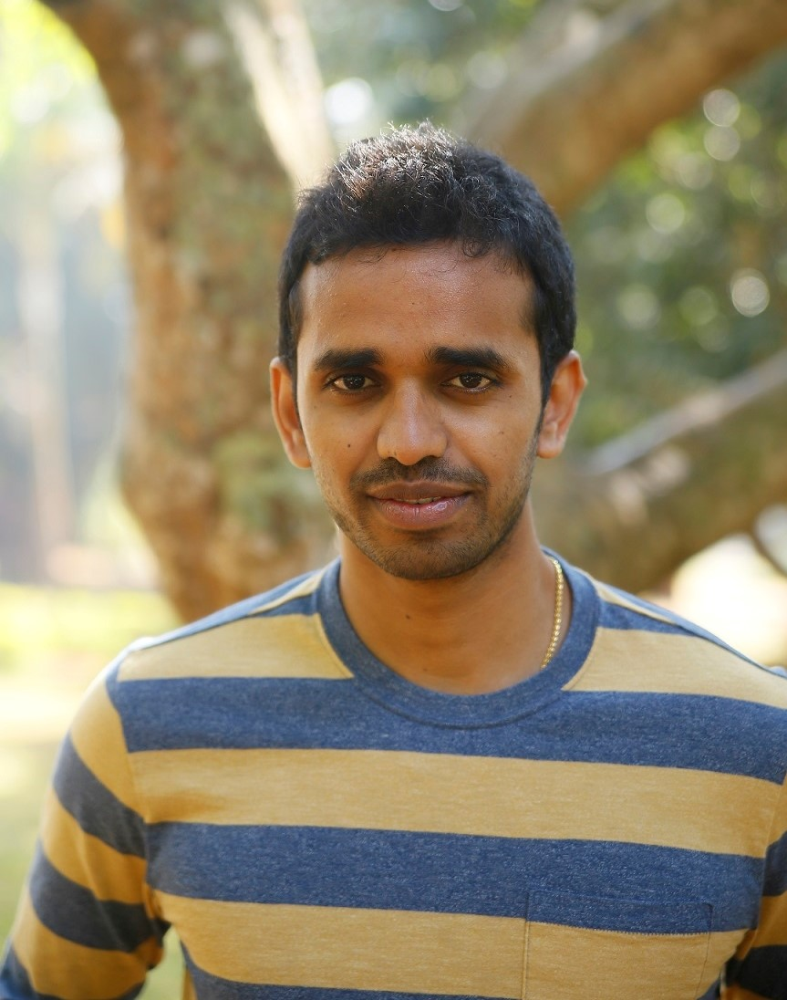

Post-doctoral Researcher
Booth School of Business
University of Chicago
5807 Woodlawn Ave
Chicago, IL, 60615.
veeranjaneyulus@gmail.com

I am interested in nonparametric statistics and large-scale optimization methods for machine learning and statistical estimation problems. Prof. Ryan Tibshirani was my PhD advisor at Carnegie Mellon University.
A Higher-order Kolmogorov-Smirnov Test
Veeranjaneyulu Sadhanala, Yu-Xiang Wang, Aaditya Ramdas, Ryan Tibshirani.
International Conference on Artifical Intelligence and Statistics, 2019.
I graduated from IIT Bombay, CSE department in 2009 and worked as a quantitative analyst with the interest rate trading desk at Morgan Stanley until 2013.